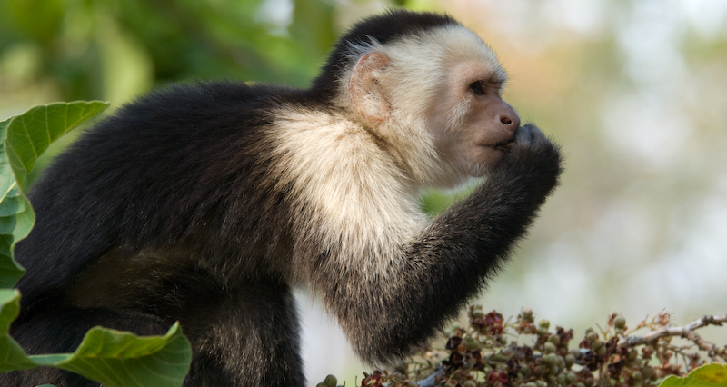
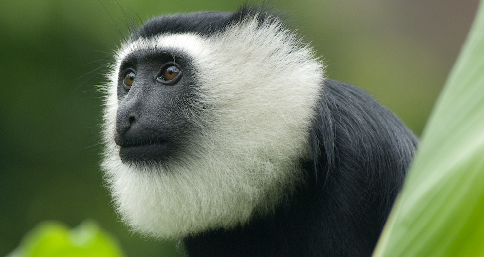

Primates in the ACG, Costa Rica
My postdoctoral research focused on how dispersal patterns and cooperation influence reproductive success in white-faced capuchins in Sector Santa Rosa in the Área de Conservación Guanacaste (ACG). I am now studying the genetic structure of three sympatric primates (white-faced capuchins, mantled howlers, and black-handed spider monkeys) in the larger conservation area ACG. Read more here.
Colobus at Boabeng-Fiema, Ghana
During my doctoral research, I investigated how ecological and social factors affect dispersal patterns and social relationships in white-thighed colobus monkeys. I am currently investigating how immigration status and social network position affect their gut microbiome, which can have important health implications. Read more here.